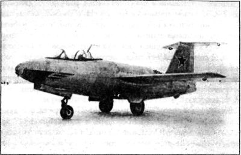

Истребитель-перехватчик «И-270»
Экспериментальный истребитель-перехватчик «И-270» разрабатывался ОКБ Артема Микояна для частей ПВО крупных промышленных объектов и военных баз и должен был обладать высотой боевого применения 16–17 километров и скоростью 1100 км/ч. Для обеспечения этих требований в качестве силовой установки для нового истребителя был выбран жидкостный ракетный двигатель.
Самолет создавался под влиянием конструкции ракетного перехватчика «Me-263-VI», захваченного в Германии на полигоне в Дассау (этот ракетоплан мы обсуждали в главе 2). Из-за того, что специалисты ЦАГИ долго не могли подобрать оптимальную форму и угол стреловидности крыла, постройку истребителя к установленному правительством сроку (ноябрь 1946 года) завершить не удалось. Первый экземпляр «И-270» («Ж-1») выпущен из производства только 28 декабря 1946 года.
«И-270» представлял собой цельнометаллический свободнонесущий среднеплан с фюзеляжем круглого сечения (полумонокок). Фюзеляж имел разъем для расстыковки на две части. Вырез внутри центральной части фюзеляжа служил для установки крыла, которое представляло собой неразъемный пятилонжеронный кессон с толстыми металлическими панелями обшивки. Хвостовое оперение выполнено Т-образным, для уменьшения влияния крыла на горизонтальное оперение. Основные стойки шасси, имевшие очень узкую колею — 1,6 метра, убирались в центральную часть фюзеляжа, в нишу под крылом. Ниша носовой стойки и две пушки «НС-23» калибра 23 миллиметра с боезапасом на 40 патронов располагались под герметичной кабиной летчика. В ходе испытаний они не устанавливались.

Экспериментальный истребитель-перехватчик «И-270» («Ж-1»)
Взлетная масса экспериментального истребителя составляла 4120 килограммов. Запаса топлива должно было хватить на 4–9 минут полета.
Силовая установка включала двухкамерный ЖРД «РД-2М-ЗВ» конструкции Леонида Душкина и Валентина Глушко. Этот двигатель являлся развитием ЖРД «Walter HWK 509С-1». Две камеры сгорания были расположены в хвостовой части фюзеляжа одна над другой и развивали суммарную тягу 1450 килограммов. ЖРД работал на смеси азотной кислоты с керосином и 80 %-ной перекиси водорода. Общий запас компонентов горючего — 2120 килограммов. Подача топлива и окислителя — насосная. Привод всех насосов — от бортовой электросистемы, куда входили электрогенератор, связанный с турбонасосным агрегатом ЖРД, и один генератор с приводом от небольшого двухлопастного винта в носовой части фюзеляжа, вращающегося от набегающего потока. Топливная система самолета состояла из трех типов баков: четырех кислотных (1620 килограммов), одного керосинового (440 килограммов) и семи для перекиси водорода.
В связи с отсутствием рабочего двигателя испытания «Ж-1» разделили на два этапа. На первом этапе, как обычно, выполнялись буксировочные полеты первого экземпляра с макетным двигателем за бомбардировщиком «Ту-2», которые завершились в июле 1947 года. В полетах происходили расцепки и затем безмоторные посадки, как на планере. Перед первыми полетами на «Ж-1» летчики тренировались на истребителе «Як-9», нагруженном свинцовыми болванками для имитации характеристик продольной и поперечной устойчивости, сходных с расчетными характеристиками «И-270».
После установки 8 мая 1947 года ракетного двигателя «РД-2М-ЗВ» на втором экземпляре «И-270» («Ж-2») начался второй этап испытаний. Однако при завершении отработки двигателя на земле вышла из строя его малая камера сгорания и была повреждена хвостовая часть самолета. После ремонта, 2 сентября 1947 года, состоялся первый вылет, который оказался и последним. Во время неудачной посадки самолет, пилотируемый летчиком-испытателем Пахомовым, потерпел аварию и был разрушен. Истребитель решили не восстанавливать.
Вскоре на первом экземпляре «И-270» макетный двигатель заменили на работоспособный, и 2 октября 1947 года летчик-испытатель Юганов выполнил на нем первый полет. Однако из-за специфических особенностей и трудности эксплуатации ЖРД в зимних условиях было принято решение законсервировать самолет до марта 1948 года.
В 1948 году, вскоре после возобновившихся испытаний, Юганов совершил вынужденную посадку «Ж-1» без выпущенного шасси. Самолет получил повреждения и больше не восстанавливался.
«И-270» показал удовлетворительную скороподъемность и высокую скорость в горизонтальном полете, но одновременно — плохую маневренность и ограниченный радиус действия. В то же время конкурентный истребитель «МиГ-15» с турбореактивными двигателями уже находился на стадии постройки опытного образца и проект «И-270» был остановлен.